SwinTransformer论文精读
原文：https://arxiv.org/abs/2103.14030
参考：Swin Transformer论文精读【论文精读】哔哩哔哩_bilibili
Swin Transformer
摘要
本文提出了一种新的vision Transformer，称为 Swin Transformer，它能够作为计算机视觉领域的通用骨干网络。将 Transformer 从语言领域应用到视觉的挑战源于两个领域之间的差异，例如视觉实体规模的巨大差异（相同语义的实体在不同场景不同图像中尺寸差异大）以及图像中像素与文本中单词相比的高分辨率（以像素点为基本单位的话，序列长度会变得非常长）。为了解决这些差异，我们提出了一个分层 Transformer，其表示是使用 Shifted windows 计算得到的。移位窗口方案通过将自注意力计算限制在非重叠的本地窗口，同时还允许跨窗口连接，带来了更高的效率。这种层次结构非常灵活，能够提供各种层次的尺度信息，并且具有相对于图像大小线性增长的计算复杂性（注意力是在窗口内计算的）。 Swin Transformer 的这些品质使其能够兼容广泛的视觉任务，包括图像分类（ImageNet-1K 上的 87.3 top-1 准确度）和密集预测任务:例如对象检测（COCO testdev 上的 58.7 box AP 和 51.1 mask AP）和语义分割（ADE20K val 上为 53.5 mIoU）。其性能在 COCO 上大幅超越了之前的最先进水平，为 +2.7 box AP 和 +2.6 mask AP，在 ADE20K 上为 +3.2 mIoU，展示了基于 Transformer 的模型作为视觉backbone的潜力。分层设计和移位窗口方法也被证明对全MLP架构有益。代码和模型可在 https://github.com/microsoft/Swin-Transformer上公开获取。
VIT原论文只把Transformer应用到了分类，而将检测分割等一系列任务留给了后人去探索。Swin Transformer的研究动机之一就是表明Transformer确实可以用于更多的cv领域，且性能远胜于CNN。
两大特点：
- 分层特征表示
- 相对于图像大小线性增长的计算复杂性
1.介绍
在本文中，我们寻求扩展 Transformer 的适用性，使其可以作为视觉领域的通用backbone。将Transformer在语言领域的高性能转移到视觉领域的重大挑战可以通过两种模式之间的差异来解释。这些差异之一涉及规模。
- 与作为语言 Transformer 中处理基本元素的单词标记不同，视觉元素在规模上可能存在很大差异，在现有的基于 Transformer 的模型中，tokrn都是固定规模的，不适合视觉应用。
- 另一个区别是图像中像素的分辨率比文本段落中的单词要高得多。存在许多视觉任务，例如语义分割，需要在像素级进行密集预测，这对于高分辨率图像上的 Transformer 来说是很棘手的，因为其自注意力的计算复杂度与图像大小成二次方。
为了克服这些问题，我们提出了一个通用的Transformer主干，称为 Swin Transformer，它构建分层特征图，并且具有与图像大小线性相关的计算复杂度。如图 1(a) 所示，Swin Transformer 通过从小尺寸patch（灰色轮廓）开始并逐渐合并更深 Transformer 层中的相邻patch来构建分层表示。将这些分层特征图输入给特征金字塔网络 (FPN) 或 U-Ne，Swin Transformer模型可以方便地进行密集预测。线性计算复杂度是通过在分割图像的非重叠窗口（以红色框出）内计算自注意力来实现的。每个窗口中的补丁数量是固定的，因此复杂度与图像大小成线性关系（图片增大多少倍，窗口数量就增大多少倍，计算复杂度也相应增大多少倍）。这些优点使 Swin Transformer 适合作为各种视觉任务的通用骨干网络，与之前基于 Transformer 的架构形成鲜明对比，后者生成单一分辨率的特征图并具有二次复杂度。
对于目标检测或者分割任务来说，多尺寸的特征是十分重要的.
目标检测：当有了一个分层的卷积神经网络之后，每一层的特征图的感受野是不一样的，它能抓住物体不同尺寸的特征。
分割：U-Net为了处理物体不同尺寸的问题，提出了一个skip connection的方法，即在上采样的时候不止从BottleNet里拿特征，还从之前下采样得到的特征图那里拿特征。从而恢复图像的细节。
为什么计算小窗口内的自注意力：
- 利用了卷积神经网络中的归纳偏置作为先验知识，即同一个物体的不同部位或者语义相近的不同物体还是大概率会出现在相连的地方，所以在一个小范围内算自注意力差不多也是够用的。全局算子注意力对于视觉任务来说可能有些浪费资源。
- 在卷积神经网络中通过池化操作增大每一个卷积核能看到的感受野，使得每次池化后的特征能抓住物体的不同尺寸。Swin Transformer通过patch merging来类比池化，将小patch合并为大patch，大patch能看到合并前小patch的内容，从而增大感受野，抓住多尺寸的特征。
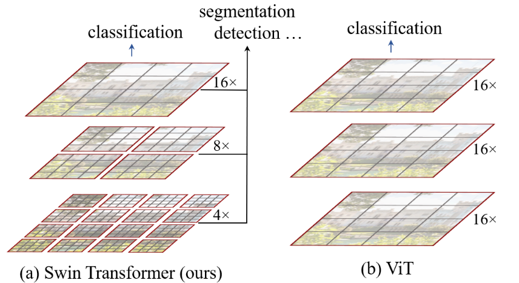
图 1. (a) 所提出的 Swin Transformer 通过合并更深层中的图像块（以灰色显示）来构建分层特征图，并且由于仅在每个局部窗口内计算自注意力（以红色显示），因此具有于输入图像大小线性相关的计算复杂性）。因此，它可以作为图像分类和密集识别任务的通用主干。 (b) 相比之下，之前的视觉 Transformers产生单个低分辨率的特征图，并且由于全局自注意力的计算，输入图像大小的计算复杂度是二次方的。
Swin Transformer 的一个关键设计因素是连续自注意力层之间窗口的移动，如图2所示。移动的窗口连接了前一层的窗口，提供了它们之间的连接，从而显着增强了建模能力（参见表4）。这种策略在现实世界的如下方面也很有效：同一个窗口内的所有query patches共享相同的key set，这有利于硬件中的内存访问。相比之下，早期基于滑动窗口的自注意力方法由于不同query像素的key set不同，因此在通用硬件上延迟较低。我们的实验表明，window shift方法的延迟比滑动窗口方法低得多，但建模能力相似（参见表 5 和表 6）。事实证明，移位窗口方法对于全MLP架构也是有益的 。
窗口的移动：
在第L层的特征图中，首先通过像特征图划分为小窗口来有效降低序列长度，从而减小计算复杂度.图中灰框的patch是最小的基本单元即4*4的patch，红色的框是一个中型的计算的单元即一个window（窗口），在Swin Transformer中默认一个window有7x7=49个patch，图2仅是示意图。所谓的shift操作就是往右下角移动2个patch，然后再划分新的窗口。好处在于建立了windows之间的联系，如果没有shift，那么这些窗口都是不重叠的。若每个自注意力都在各自的窗口内进行，那么就一个patch无法注意到别的窗口里的patch的信息，达不到使用Transformer的初衷（更好的理解上下文）了，就没有全局建模的能力。
于是乎，加上patch merging操作，到最后一层每个patch的感受野就非常之大了，所谓的窗口内的自注意力操作可以等价为全局自注意力操作了
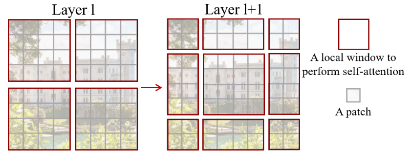
图 2. 在所提出的 Swin Transformer 架构中计算自注意力的移动窗口方法的图示。在l层（左）中，采用常规窗口划分方案，并在每个窗口内计算自注意力。在下一层l+1（右）中，窗口分区发生移动，产生新的窗口。新窗口中的自注意力计算跨越了l层中先前窗口的边界，提供了它们之间的连接。
Swin Transformer 在图像分类、目标检测和语义分割等识别任务上取得了强大的性能。它的性能显着优于 ViT/DeiT和 ResNe(X)t 模型，并且三个任务的延迟相似。
2.相关工作
卷积神经网络及其变体
以自注意力为骨干的架构：同样受到自注意力层和 Transformer 架构在 NLP 领域成功的启发，一些作品采用自注意力层来取代流行的 ResNet中的部分或全部空间卷积层。在这些工作中，自注意力是在每个像素的局部窗口内计算的，以加速优化，并且它们实现了比对应的 ResNet 架构稍微更好的精度/FLOPs 权衡。然而，它们昂贵的内存访问导致它们的实际延迟明显大于卷积网络。我们建议不使用滑动窗口，而是在连续层之间移动窗口，这样可以在通用硬件中更有效地实现。
自注意力/Transformers 来补充 CNN：另一项工作是使用自注意力层或 Transformer 来增强标准 CNN 架构。自注意力层可以通过提供远程编码依赖或异构交互的能力来补充主干网络或头部网络。
基于 Transformer 的视觉主干：虽然 ViT 需要大规模训练数据集（即 JFT-300M）才能表现良好，但 DeiT引入了几种训练策略，使 ViT 使用较小的 ImageNet-1K 数据集也能有效。 ViT 在图像分类上的结果令人鼓舞，但其架构不适合用作密集视觉任务或输入图像分辨率很高时的通用骨干网络。由于其低分辨率特征图以及复杂性随着图像大小的二次方增加。有一些工作通过直接上采样或反卷积将 ViT 模型应用于对象检测和语义分割的密集视觉任务，但性能相对较低。与我们的工作同时进行的是一些修改 ViT 架构以实现更好的图像分类。根据经验，我们发现我们的 Swin Transformer 架构可以在图像分类的这些方法之间实现最佳的速度准确度权衡，尽管我们的工作重点是通用性能而不是专门针对分类。另一项并行工作探索了在 Transformers 上构建多分辨率特征图的类似思路。它的复杂性仍然与图像大小成二次方，而我们的复杂性是线性的并且也在本地运行，这已被证明有利于对视觉信号的高相关性进行建模。我们的方法既高效又有效，在COCO上实现了最先进的准确性。
ViT不适合作为视觉通用模型的backbone，尽管在分类任务上表现不错，但在目标检测、分割等的视觉任务上，在处理高分辨率图像时由于计算复杂性随着图像大小的二次方增加，导致了计算资源的巨大增长。若用降采样的方法依旧保持少量的patch数，那么高分辨率带来的优势就没有了。
3.方法
3.1整体架构

图 3.(a) Swin Transformer (Swin-T) 的架构； (b) 两个连续的 Swin 变压器块（用方程 (3) 表示的符号）。 W-MSA 和 SW-MSA 是分别具有正则和shifted window配置的多头自注意力模块。
图 3 是Swin Transformer的整体架构的微型版本 (SwinT)。它首先通过patch分割模式（如 ViT）将输入的RGB 图像分割成不重叠的patch。每个patch都被视为一个“toekn”，其特征被设置为原始像素 RGB 值的串联。在我们的实现中，我们使用的patch大小为4×4，因此每个patch的特征维度为4×4×3=48。线性嵌入层应用于此原始值特征，将其投影到任意维度（记为C)。
在这些patch tokens上应用了几个经过修改的自注意力机制的 Transformer 块（Swin Transformer 块）。Transformer块维持token的数量 ()不变，并与线性嵌入一起称为“阶段1”。
为了产生分层表示，随着网络变得更深，通过patch merging层来减少token的数量。第一个patch合并层连接每组2×2相邻patch的特征，并在4C维连接特征上应用线性层。这将标记数量减少了2×2=4 倍（分辨率下采样 2 倍），并且输出维度设置为 2C。随后应用 Swin Transformer块进行特征转换，分辨率保持在 。补丁合并和特征转换的第一个块被表示为“阶段 2”。该过程重复两次，即“阶段 3”和“阶段 4”，输出分辨率分别为 和 。这些阶段共同产生分层表示，具有与典型卷积网络相同的特征图分辨率，例如VGG和ResNet 。因此，所提出的架构可以方便地替换现有方法中用于各种视觉任务的主干网络。
Swin Transformer块：通过将 Transformer 模块中的标准多头自注意力（MSA）模块替换为基于移位窗口（第 3.2 节中描述）的模块而构建的，其他层保持不变。如图 3(b) 所示，Swin Transformer 模块由基于移位窗口的 MSA 模块组成，后跟中间带有 GELU 非线性的 2 层 MLP。在每个MSA模块和每个MLP之前应用LayerNorm (LN) 层，并在每个模块之后应用残差连接。
举例：
假设images大小为[224,224,3],，在Swin Transformer中patch大小为4*4，打成patch之后图像大小为[56,56,48],线性嵌入层将通道维度变为Transformer能够接受的数C，在Swin-T为96，故输入Swin Transformer bloclk的图序列大小为[56x56=3196,96]，3196是Transformer不能接受的序列长度，所以Swin Transformer通过基于窗口的模式来减少计算量，每个窗口有7x7=49个patch，即序列长度只有49。由于Transformer block的输入输出维度不变，输出还是[3196,96],处理一下变为[56,56,96]。
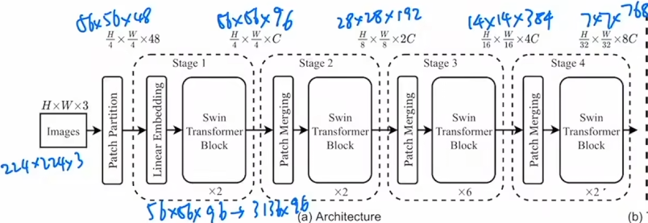
patch merging:为了获得多尺寸特征，需要有类似于卷积神经网络中的池化操作，这里即patch merging。patch merging类似于pixel shuffle上采样的反过程。由于下采样两倍，所以隔一个选一个（下图中的数字不是值，只是一个序号），之后通过一个1x1卷积将通道维度由4C变为2C（为了与卷积神经网络一致，在下采样两倍后，通道维度变为原先的两倍）
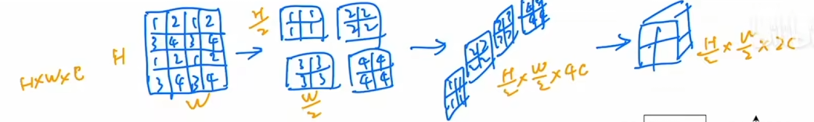
因为Swin Transformer不是单纯用于分类任务，图中只给出了backbone网络。在做分类任务时，Swin Transformer没有用VIT中[CLS] token作为输出，而是将最后输出7x7的特征图做了全局池化操作变为了[1，1，768]
3.2 基于Shifted Window的自注意力
标准Transformer架构及其对图像分类的应用都进行全局自注意力(计算token与所有其他token之间的关系)。全局计算导致toekn数量二次方的复杂度，使其不适合许多需要大量token来进行密集预测或表示高分辨率图像的视觉问题。
非重叠窗口中的自注意力: 为了有效建模，我们建议在窗口内部计算自注意力。窗口被布置为以不重叠的方式均匀地划分图像。假设每个窗口包含M×M个patch，则全局MSA模块和基于h×w个补丁图像的窗口的计算复杂度为(我们在确定复杂性时省略了 SoftMax 计算)。：
其中前者与patch数hw成二次方，后者在M固定（默认设置为7）时呈线性。全局自注意力计算通常无法承受过大的，而基于窗口的自注意力是可扩展的。
继续以特征图[56,56,48]举例，Swin Transformer中窗口大小是7x7个patch，所以特征图[56,56,48]被划分为8x8=64个窗口。
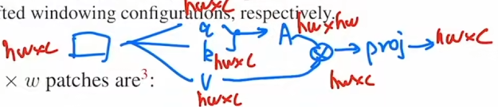
公式(1):经过(c,c)的系数矩阵得到qkv，计算量为。,AV的计算量各为，再经过线性投射层(c,c)的计算量为，加起来即为
公式(2):对于每个窗口而言，hw都替换为M，计算量为，一共有个窗口，总和为。
连续块中的移位窗口 基于窗口的自注意力模块缺乏跨窗口的连接，这限制了其建模能力。为了引入跨窗口连接，同时保持非重叠窗口的高效计算，我们提出了一种移位窗口方法，该方法在连续 Swin Transformer 块中的两个分区配置之间交替。
如图3(b)所示,两个Swin Transformer 块中一个是W-MSA,另一个是SW-MSA，这也是为什么图3(a)中Swin Transformer 块都是x2的原因。
如图 2 所示，第一个模块使用从左上角像素开始的常规窗口划分策略，将 8 × 8 特征图均匀划分为大小为4×4 (M=4) 的2×2窗口。然后，下一个模块采用与前一层的窗口配置不同的窗口配置，通过将窗口从规则划分的窗口中移动（[]，[]）个像素。使用移位窗口分区方法，连续的 Swin Transformer 块计算如下
其中 和分别表示块L的 (S)W-MSA 模块和MLP模块的输出特征；W-MSA和SW-MSA 分别表示使用常规(不移位)和移位窗口配置的基于窗口的多头自注意力。移位窗口分割方法在前一层中引入相邻非重叠窗口之间的连接，并且被发现在图像分类、对象检测和语义分割中有效，如表4所示。
对于shifted window的高效batch配置： 计算移位窗口分区的一个问题是，它将导致更多的窗口，从移位配置中的[]，[]到([]+1，[]+1)(以图2为例，4个变9个)，并且一些窗口将小于M×M(为了使窗口大小 (M, M) 可除以 (h, w) 的特征图大小，如果需要，可以在特征图上使用右下填充)。一个简单的解决方案是将较小的窗口填充到 M×M 的大小，并在计算注意力时屏蔽掉填充的值。当常规分区中的窗口数量较少时，例如2×2，这种朴素解决方案增加的计算量是相当可观的（2×2→3×3，增加了 2.25 倍）。在这里，我们提出了一种更有效的批量计算方法，通过向左上方向循环移位，如图 4 所示。经过这种移位，批处理窗口可能由多个在特征图中不相邻的子窗口组成，因此采用屏蔽机制将自注意力计算限制在每个子窗口内。通过循环移位，批处理窗口的数量保持与常规窗口划分相同，因此也是高效的。这种方法的低延迟如表 5 所示。
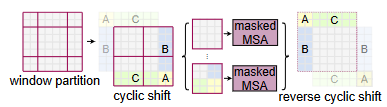
问题：移位窗口导致窗口数量变多且窗口大小不一，不同的窗口大小不能统一输入Transformer做自注意力，因此可以做零填充然后算注意力的时候屏蔽掉填充。但是会导致计算量的显著提高。
解决办法：循环移位+掩码，循环移位把原图中ABC三块区域移动拼接到另一边去形成新的图，这样还是四个窗口且窗口大小同。问题在于原先的ABC三个区域与他们所拼接的区域是不应该算自注意力的，这就要用到掩码。在做完masked MSA之后要将循环移位后的区域还原回去，否则会破坏原图像的语义信息。
masked MSA：
作者给出的示意图及可视化代码
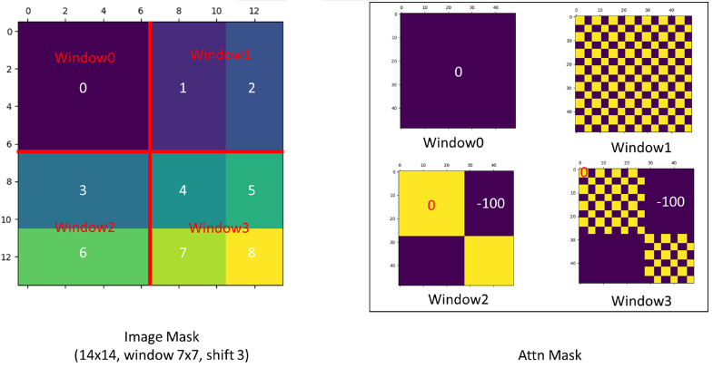
2
3
4
5
6
7
8
9
10
11
12
13
14
15
16
17
18
19
20
21
22
23
24
25
26
27
28
29
30
31
32
33
34
35
36
37
38
39
40
41
42
43
44
45
46
47
48
49
50
import matplotlib.pyplot as plt
def window_partition(x, window_size):
"""
Args:
x: (B, H, W, C)
window_size (int): window size
Returns:
windows: (num_windows*B, window_size, window_size, C)
"""
B, H, W, C = x.shape
x = x.view(B, H // window_size, window_size, W // window_size, window_size, C)
windows = x.permute(0, 1, 3, 2, 4, 5).contiguous().view(-1, window_size, window_size, C)
return windows
window_size = 7
shift_size = 3
H, W = 14, 14
img_mask = torch.zeros((1, H, W, 1)) # 1 H W 1
h_slices = (slice(0, -window_size),
slice(-window_size, -shift_size),
slice(-shift_size, None))
w_slices = (slice(0, -window_size),
slice(-window_size, -shift_size),
slice(-shift_size, None))
cnt = 0
for h in h_slices:
for w in w_slices:
img_mask[:, h, w, :] = cnt
cnt += 1
mask_windows = window_partition(img_mask, window_size) # nW, window_size, window_size, 1
mask_windows = mask_windows.view(-1, window_size * window_size)
attn_mask = mask_windows.unsqueeze(1) - mask_windows.unsqueeze(2)
attn_mask = attn_mask.masked_fill(attn_mask != 0, float(-100.0)).masked_fill(attn_mask == 0, float(0.0))
plt.matshow(img_mask[0, :, :, 0].numpy())
plt.matshow(attn_mask[0].numpy())
plt.matshow(attn_mask[1].numpy())
plt.matshow(attn_mask[2].numpy())
plt.matshow(attn_mask[3].numpy())
plt.show()

**相对位置偏差 **：在计算自注意力时，，在计算相似度时将相对位置偏差 包含到每个头：
其中是Q、K和V矩阵； d 是Q/K维度，是窗口中的patch数。由于沿每个轴的相对位置位于 [−M+1, M−1] 范围内，因此我们参数化一个较小尺寸的偏置矩阵 ，并且B中的值取自.
我们观察到与没有此偏差项或使用绝对位置嵌入的对应项相比有显着改进，如表 4 所示。向输入进一步添加绝对位置嵌入会稍微降低性能，因此在我们的实现中没有采用。预训练中学习到的相对位置偏差也可用于初始化模型，以便通过双三次插值对不同的窗口大小进行微调。
在VIT中采用的是1D绝对位置编码,且在embeddding过程中直接与 patch embedding相加
2
3
4
# patch emded + pos_embed ：图像块嵌入 + 位置嵌入
x = x + self.pos_embed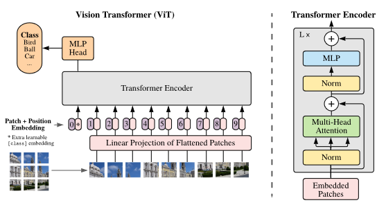
而在Swin Transformer中如公式所示，是在QKV的过程中将得到的张量根据相对位置索引加上对应的位置偏置，之后再与V算softmax
3.3 架构变量
我们构建了名为Swin-B的基本模型，其模型大小和计算复杂度与 ViTB/DeiT-B 类似。我们还引入了 Swin-T、Swin-S和Swin-L，它们的模型大小和计算复杂度分别约为0.25×、0.5×和2×的Swin-B。请注意，Swin-T 和 Swin-S 的复杂度分别与ResNet-50 (DeiT-S)和ResNet-101相似。默认情况下，窗口大小设置为M = 7。对于所有实验，每个头的query维度为 d = 32，每个 MLP的扩展层为 α = 4。这些模型变体的架构超参数是：
T：Tiny，S：Small，B：Base，L：Large
- Swin-T：C = 96，层数 = {2, 2, 6, 2}
- Swin-S：C = 96，层数 ={2, 2, 18, 2}
- Swin-B：C = 128，层数 ={2, 2, 18, 2}
- Swin-L：C = 192，层数 ={2, 2, 18, 2}
其中C是第一阶段隐藏层的通道数。表1列出了 ImageNet 图像分类模型变体的模型大小、理论计算复杂度 (FLOP) 和吞吐量。
4.实验
我们在ImageNet-1 图像分类、COCO目标检测和ADE20K语义分割三个任务上进行实验。接下来，我们首先将所提出的 Swin Transformer 架构与之前在这三个任务上的最新技术进行比较。然后，去掉Swin Transformer的重要设计元素再做对比。
4.1. ImageNet-1K 上的图像分类
设置对于图像分类，我们在 ImageNet-1K 上对Swin Transformer进行基准测试，其中包含来自1,000个类别的128万张训练图像和5万张验证图像。报告了单一作物的top-1准确度。我们考虑两种训练设置：
- 常规 ImageNet-1K训练 我们使用 AdamW优化器进行 300 个周期，使用余弦衰减学习率和 20 个周期的linear warm-up。批量大小为 1024，初始学习率为 0.001，应用 0.05 的权重衰减。我们在训练中包含了[Training data-efficient image transformers & distillation through attention (arxiv.org)](https://arxiv.org/abs/2012.12877#:~:text=View a PDF of the paper titled Training data-efficient image)的大多数增强和正则化策略，除了重复增强和EMA，它们不会提高性能。其中重复增强对于稳定 ViT训练至关重要。
- 在 ImageNet-22K 上进行预训练并在 ImageNet-1K 上进行微调 我们还在更大的 ImageNet-22K 数据集进行预训练，该数据集包含 1420 万张图像和 22K 类。我们使用 AdamW 优化器进行 90 个周期，使用线性衰减学习率和 5 个周期的linear warm-up。使用的批量大小为 4096，初始学习率为 0.001，权重衰减为 0.01。在 ImageNet-1K 微调中，我们训练模型30个周期，批量大小为1024，恒定学习率为，权重衰减为。
常规 ImageNet-1K 训练的结果 表 1(a) 展示了使用常规 ImageNet-1K 训练与其他主干网络（包括基于 Transformer 和基于 卷积的网络）的比较。与之前最先进的基于 Transformer 的架构（即 DeiT）相比，在的图像输入的情况下Swin Transformers 明显超过了具有类似复杂性的DeiT架构：Swin-T (81.3%) 比 DeiT-S (79.8% 提高了1.5%）。在 输入Swin-B (83.3%/84.5%) 比DeiT-B (81.8%/83.1%) 分别增加 1.5%/1.4%。与最先进的卷积神经网络（即 RegNet和EfficientNet ）相比，Swin Transformer 实现了稍微更好的速度与精度权衡。值得注意的是，虽然 RegNet和 EfficientNet是通过彻底的架构搜索获得的，但所提出的 Swin Transformer 是根据标准Transformer改编的，并且具有进一步改进的强大潜力。
ImageNet-22K 预训练的结果 我们还在 ImageNet22K 上预训练了更大容量的 Swin-B 和 Swin-L。 ImageNet-1K 图像分类的微调结果如表 1(b) 所示。对于 Swin-B，ImageNet22K 预训练比在 ImageNet-1K 上从头开始训练带来了 1.8%∼1.9% 的增益。与之前 ImageNet-22K 预训练的最佳结果相比，我们的模型实现了明显更好的速度与精度权衡：Swin-B 获得了 86.4% 的 top-1 精度，比具有类似推理吞吐量的 ViT 高出 2.4% （84.7 与 85.9 图像/秒）和略低的 FLOP（47.0G 与 55.4G）。较大的 Swin-L 模型实现了87.3% 的top-1准确率，比Swin-B模型高出 0.9%。
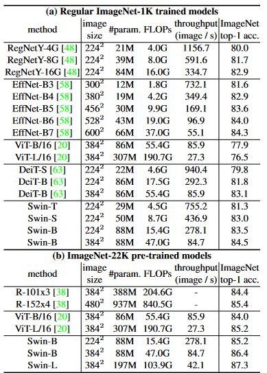
4.2 COCO上的物体检测
对象检测和实例分割实验 COCO 2017上进行，其中包含118K训练集图像、5K验证集图像和20K测试集图像。使用验证集进行消融研究，并在测试集上比较。对于消融研究，我们考虑四种典型的目标检测框架：Cascade Mask R-CNN、ATSS、RepPoints v2和Sparse RCNN。对于这四个框架，我们使用相同的设置：多尺度训练（调整输入大小，使短边在80到800之间，而长边最多1333）、AdamW 优化器（初始学习率为 0.0001，权重衰减为 0.05，批量大小为16），以及3x调度（36个时期）。对于模型的比较，我们采用改进的HTC（表示为HTC++），具有instaboost 、更强的多尺度训练 、6x调度（72epoch）、soft-NMS 和ImageNet-22K预训练模型作为初始化。
我们将我们的 Swin Transformer与标准卷积神经网络，即ResNe(X)t，以及之前的 Transformer 网络，例如DeiT相比较。比较是通过仅更改backbones而其他设置不变来进行的。请注意，虽然 Swin Transformer 和 ResNe(X)t 由于其分层特征图而直接适用于上述所有框架，但 DeiT 只产生单一分辨率的特征图，不能直接应用。为了公平比较，我们按照使用反卷积层构建 DeiT 的分层特征图。
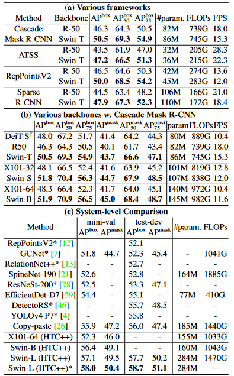
与 ResNe(X)t 的比较 表 2(a) 列出了 Swin-T 和 ResNet-50在四种目标检测框架上的结果。我们的 Swin-T 架构比 ResNet-50 带来一致的 +3.4∼4.2 box AP 增益，但模型尺寸、FLOP 和延迟稍大。表 2(b) 比较了 Swin Transformer 和 ResNe(X)t使用 Cascade Mask RCNN 在不同模型容量下的表现。 Swin Transformer 实现了51.9 box AP 和 45.0 mask AP 的高检测精度，与具有相似模型大小、FLOPs 和延迟的 ResNeXt101-64x4d 相比，显着提高了+3.6 box AP和+3.3mask AP。在使用改进的 HTC框架的 52.3 box AP 和 46.0 mask AP 的较高基线上，Swin Transformer 的增益也很高，为 +4.1 box AP 和 +3.1 mask AP（参见表 2©）。关于推理速度，虽然 ResNe(X)t 是由高度优化的 Cudnn 函数构建的，但我们的架构是使用并非全部优化良好的内置PyTorch函数实现的。彻底的内核优化超出了本文的范围。
与DeiT的比较 使用 Cascade Mask R-CNN 框架的 DeiT-S 的性能如表 2(b) 所示。 Swin-T 的结果比 DeiT-S 高出 +2.5 box AP 和 +2.3 mask AP，模型大小相似（86M vs 80M），并且推理速度显着更高（15.3 FPS vs. 10.4 FPS）。DeiT 的推理速度较低主要是由于其输入图像大小的二次复杂度。
与之前最先进的模型的比较 表2© 将我们的最佳结果与之前最先进模型的结果进行了比较。我们的最佳模型在 COCO test-dev 上实现了 58.7 box AP 和 51.1 mask AP，超过了之前的最佳结果+2.7box AP和+2.6 mask AP。
4.3. ADE20K 上的语义分割
设置：ADE20K是一个广泛使用的语义分割数据集，涵盖了广泛的 150 个语义类别。它总共有 25K 张图像，其中 20K 用于训练，2K 用于验证，另外 3K 用于测试。我们利用 mmseg中的 UperNet作为我们的基础框架，因为它的效率很高。更多详细信息请参阅附录。
结果 表 3 列出了不同方法/主干对的 mIoU、模型大小 (#param)、FLOP 和 FPS。从这些结果可以看出，在类似的计算成本下，Swin-S 比 DeiT-S 高+5.3 mIoU（49.3 vs. 44.0）。它还比 ResNet-101 高 +4.4 mIoU，比 ResNeSt-101 高 +2.4 mIoU 。我们使用 ImageNet-22K 预训练的 Swin-L 模型在 val 集上达到了 53.5 mIoU，比之前的最佳模型高出 +3.2 mIoU（模型尺寸更大的SETR为 50.3 mIoU）。
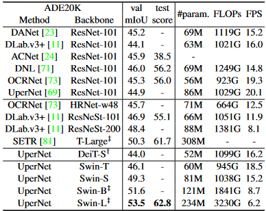
表 3. ADE20K 验证集和测试集的语义分割结果。 † 表示使用额外的反卷积层来生成分层特征图。 ‡ 表示模型已在 ImageNet-22K 上进行预训练。
4.4. 消融研究
在本节中，我们将使用 ImageNet-1K 图像分类、COCO 目标检测上的 Cascade Mask R-CNN 以及 ADE20K 语义分割上的 UperNet 来消除所提出的 Swin Transformer 中的重要设计元素。
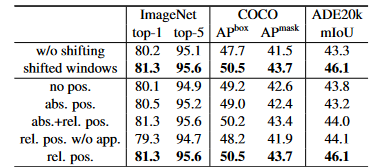
表 4. 使用 Swin-T 架构在三个基准上对移位窗口方法和相对位置嵌入方法进行的消融研究。 w/o shift：所有self-attention模块均采用常规窗口划分，无移位；abs.pos.：ViT的绝对位置嵌入；rel.pos.：带有附加相对位置偏差项的默认设置（参见方程（4））； app.：等式中的第一个缩放点积项。 （4）。
移位窗口 表 4 报告了三个任务中移位窗口方法的消融情况。采用移位窗口的 Swin-T 在每个阶段都优于常规窗口的方法，在 ImageNet-1K 上的 top-1 准确率提高了 1.1% ，COCO 上+2.8 box AP/+2.2 mask AP，ADE20K 上+2.8 mIoU。结果表明了使用移位窗口在前面层中的窗口之间建立连接的有效性。移位窗口的延迟开销也很小，如表 5 所示。
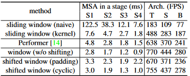
相对位置偏差 表 4 显示了不同位置嵌入方法的比较。具有相对位置偏差的 Swin-T与没有位置编码和绝对位置嵌入的情况相比在 ImageNet-1K上产生了+1.2%/+0.8%的top-1准确率、在 COCO 上获得了+1.3/+1.5 box AP 和 +1.1/+1.3 mask AP 的效果，在 ADE20K上获得了+2.3/+2.9 mIoU的效果，表明相对位置偏差的有效性。另请注意，虽然包含绝对位置嵌入提高了图像分类精度 (+0.4%)，但它损害了对象检测和语义分割（COCO 上为 -0.2 box/mask AP，ADE20K 上为 -0.6 mIoU）。
虽然最近的 ViT/DeiT 模型放弃了图像分类中的平移不变性，尽管它长期以来被证明对于视觉建模至关重要，但我们发现鼓励某些平移不变性的归纳偏差对于通用视觉建模来说仍然是可取的，特别是对于对象检测和语义分割的密集预测任务。
不同的自注意力方法 不同自注意力计算方法和实现的实际速度在表 5 中进行了比较。我们的循环实现比简单的填充具有更高的硬件效率，特别是对于更深的阶段。总体而言，它分别为Swin-T、Swin-S和Swin-B带来了13%、18%和18%的加速。
在四个网络阶段中，基于移位窗口方法构建的自注意力模块比朴素/内核实现中的滑动窗口效率高40.8×/2.5×、20.2×/2.5×、9.3×/2.1× 和 7.6×/1.8×。总体而言，基于移位窗口构建的Swin Transformer架构比Swin-T、Swin-S和Swin-B构建于滑动窗口的变体分别快 4.1/1.5、4.0/1.5、3.6/1.5 倍。表 6 比较了它们在这三个任务上的准确性，表明它们在视觉建模方面同样准确。
与最快的 Transformer 架构之一的 Performer相比，所提出的基于移位窗口的自注意力计算和整体 Swin Transformer 架构稍快（参见表 5），同时实现了与使用 Swin-T 的 ImageNet-1K 上的 Performer 相比+2.3% top-1 准确率（参见表 6）。
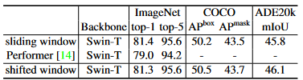
5.结论
这篇论文提出了 Swin Transformer，这是一种新的愿景 Transformer，它产生一个分层特征表示并具有相对于输入图像大小的线性相关的计算复杂性。 Swin Transformer 在 COCO 目标检测和 ADE20K 语义分割上实现了最先进的性能，显着超越了之前的最佳方法。我们希望 Swin Transformer 在各种视觉问题上的强大表现将鼓励视觉和语言信号的统一建模。作为 Swin Transformer 的关键要素，基于shifted window的自注意力在视觉问题上被证明是有效且高效的，我们也期待研究其在自然语言处理中的使用。
A1.架构细节
详细的架构规范如表 7 所示，其中所有架构均假设输入图像大小为 224×224。 “Concat n×n”表示patch中n×n相邻特征的串联。此操作会导致特征图按n的速率进行下采样。 “96-d”表示输出维度为96的线性层。“win.sz.7×7” 表示窗口尺寸为7×7的多头自注意力模块。
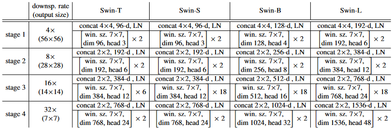
A2.详细的实验设置
A2.1 ImageNet-1K 上的图像分类
图像分类是通过在最后阶段的输出特征图上应用全局平均池化层，然后接上线性分类器来执行的。我们发现这种策略与使用 ViT和 DeiT中的利用[CLS] token一样准确。在评估中，报告了使用单一裁剪的 top-1 准确度。
常规 ImageNet-1K 训练 训练设置大多遵循[Training data-efficient image transformers & distillation through attention (arxiv.org)](https://arxiv.org/abs/2012.12877#:~:text=View a PDF of the paper titled Training data-efficient image)。对于所有模型变体，我们采用默认的输入图像分辨率为。对于其他分辨率（例如），则在分辨率下训练的模型进行微调，而不是从头开始训练，以减少GPU消耗。
当使用的分辨率图像从头开始训练时，我们使用AdamW优化器进行 300 个epochs，使用余弦衰减学习率和 20 个时期的linear warm-up。使用的批量大小为1024，初始学习率为 0.001，权重衰减为 0.05，最大范数为1的梯度裁剪。我们在训练中包含了的大多数增强和正则化策略，包括RandAugment 、Mixup、Cutmix、随机擦除和随机深度，但没有重复增强和指数移动平均 (EMA) ，因为他们不会提高性能。但是重复增强对于稳定 ViT 训练至关重要。对于较大的模型，采用越来越多的随机深度增强，Swin-T、Swin-S 和 Swin-B 分别为 0.2、0.3、0.5。
为了对更高分辨率的输入图像采用微调，我们采用了30个epochss的adamW优化器，学习率为，权重衰减为，以及与第一阶段相同的数据增强和正则化，除了将随机深度比设置为 0.1。
ImageNet-22K 预训练 我们还在更大的 ImageNet-22K 数据集上进行预训练，该数据集包含 1420 万张图像和 22K 类。训练分两个阶段进行。对于分辨率输入的第一阶段，我们使用 AdamW 优化器进行 90 个epochs，使用线性衰减学习率和 5 个时期的linear warm-up。使用的批量大小为 4096，初始学习率为 0.001，权重衰减为 0.01。在使用 2242/3842 输入进行 ImageNet-1K 微调的第二阶段，我们训练模型 30 个epochs，批量大小为 1024，恒定学习率为 ，权重衰减为。
A2.2 COCO 上的物体检测
对于消融研究，我们在Sparse RCNN方法下考虑四种典型的目标检测框架：Cascade Mask R-CNN、ATSS、RepPoints v2和 mmdetection 。对于这四个框架，我们使用相同的设置：多尺度训练调整输入大小，使短边在 80到800之间，而长边最多 1333）、AdamW优化器（初始学习率为 0.0001，权重衰减为 0.05，批量大小为 16），以及3x 调度（36个epochs，学习率在第27和33epoch衰减了10倍）。
对于系统级比较，我们采用改进的 HTC（表示为 HTC++），具有 instaboost、更强的多尺度训练（调整输入大小，使短边在 400 到 1400 之间，而长边在side 最多 1600），6x 调度（72 个 epoch，学习率在 63和69epoch衰减 0.1 倍），softNMS ，以及在最后阶段的输出附加一个额外的全局自注意力层ImageNet-22K 预训练模型作为初始化。我们对所有 Swin Transformer 模型都采用比率为 0.2 的随机深度。
A2.3 ADE20K 上的语义分割
ADE20K是一个广泛使用的语义分割数据集，涵盖了150个语义类别。它总共有25K张图像，其中20K用于训练，2K 用于验证，另外 3K 用于测试。我们利用 mmsegmentation中的 UperNet作为我们的基础框架，以实现其高效率。在训练中，我们采用 AdamW优化器，初始学习率为 ，权重衰减为 0.01，使用线性学习率衰减和 1,500 次迭代的linear warm-up。模型在 8个GPU上进行训练，每个 GPU2个图像，进行16万次迭代。对于图像增强，我们采用mmsegmentation 中的默认设置，即随机水平翻转、比率范围 [0.5, 2.0] 内的随机重新缩放和随机光度失真 。所有 Swin Transformer 模型都应用比率为 0.2 的随机深度。 Swin-T、Swin-S 在标准设置上进行训练，与之前的方法一样，输入为 512×512。带‡的Swin-B和Swin-L表示这两个模型是在ImageNet-22K上预训练的，并使用640×640的分辨率图像进行训练。在推论中，采用了训练分辨率的[0.5,0.75,1.0,1.25,1.5,1.75]×分辨率的多尺度测试。在报告测试分数时，按照常见做法，训练图像和验证图像都用于训练。
A3 更多实验
A3.1 不同输入尺寸的图像分类
表 8 列出了 Swin Transformers 在 到不同输入图像尺寸下的性能。一般来说，输入分辨率越大，top-1 精度越高，但推理速度越慢。
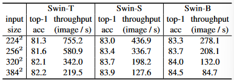
A3.2 COCO 上 ResNe(X)t 的不同优化器
表 9 比较了 COCO 目标检测上 ResNe(X)t 主干的 AdamW 和 SGD 优化器。本次比较中使用了 Cascade Mask R-CNN 框架。虽然 SGD 被用作 Cascade Mask R-CNN 框架的默认优化器，但我们通常通过用 AdamW 优化器替换它来观察到准确性的提高，特别是对于较小的主干网。因此，与提出的 Swin Transformer 架构相比，我们使用 AdamW 作为 ResNe(X)t 主干。
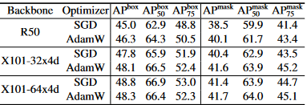
A3.3 Swin MLP-Mixer
我们将所提出的分层设计和移位窗口方法应用于 MLP-Mixer 架构，称为Swin-Mixer。表 10 显示了 Swin-Mixer 与原始 MLPMixer 架构 MLP-Mixer 和后续性能方法ResMLP相比较的结果。使用稍小的计算预算（10.4G 与 12.7G），Swin-Mixer 的性能明显优于 MLP-Mixer（81.3% vs. 76.4%）。与 ResMLP相比，它还具有更好的速度精度权衡。这些结果表明所提出的分层设计和移位窗口方法是可推广的。
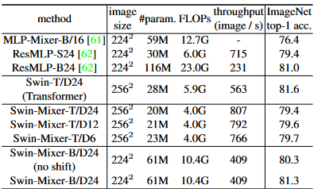